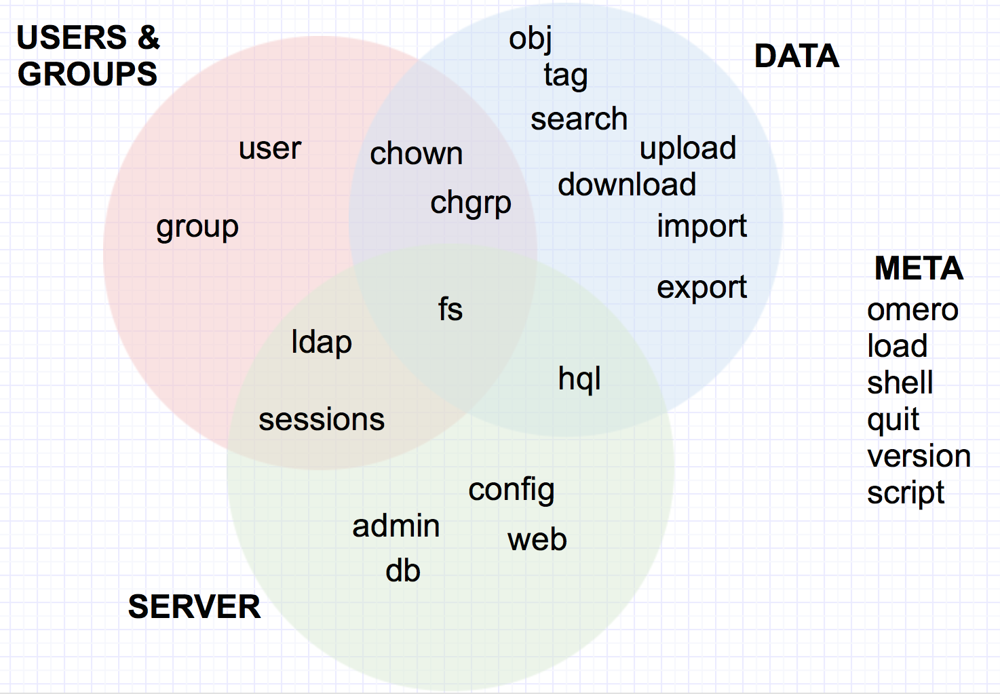
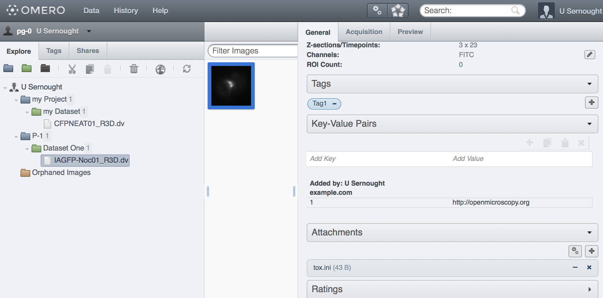

Interacting with your data in OMERO
Dundee
The Paris of the North
June 2016
Colin Blackburn, Mark Carroll & Josh Moore
@openmicroscopy #OME2016
Outline
- Overview of the CLI
- Working with data from the CLI
- Creating stuff
- Finding stuff
- Getting stuff out
- Deleting stuff
- Moving stuff
The CLI
The CLI is an OMERO client driven by the command line. It is a set of Python-based system-administration, deployment and advanced user tools. Most of commands work remotely so that the CLI can be used as a client against a remote OMERO server. It offers tools for users, facility managers, system administrators and developers.
CLI help
$ bin/omero help
usage: omero <command> [options] args
See 'help <command>' or '<command> -h' for more information on syntax
Type 'quit' to exit
Available commands:
admin, cecog, chgrp, chown, config, db, delete, download, export,
fs, group, help, hql, import, ldap, load, node, obj, perf, quit,
script, search, server, sessions, shell, tag, testengine, upload,
user, version, web
Other help topics:
debug, env
For additional information, see:
http://www.openmicroscopy.org/site/support/omero5.2/users/cli/index.html
The CLI ecosystem
Working with data: Creating stuff
- import
- upload
- tag
- obj
Creating stuff: import
- The CLI import command allows you to import images to an OMERO server from the command line.
- It is ideally suited for anyone wanting to use a shell-scripted or web-based front-end interface for importing.
- The command line version supports the same file formats and functions in much the same way.
Creating stuff: import
- The CLI import command returns details of Pixels, Filesets and Images or Screens.
$ bin/omero import ~/Work/images/dv/IAGFP-Noc01_R3D.dv ... Imported pixels: 51 Other imported objects: Fileset:51 Image:51
- Currently mixed between stdout and stderr, but we looking at other ways of providing this data.
Creating stuff: upload
- Upload local files to the OMERO server
- Can handle pytables files
$ bin/omero upload tox.ini Uploaded tox.ini as 275 $ bin/omero obj get OriginalFile:275 name tox.ini
Creating stuff: tag
- Create, manage and view tags
$ bin/omero tag -h
...
list List all the tags, grouped by tagset
listsets List tag sets
create Create a new tag
createset Create a new tag set
load Import new tag(s) and tagset(s) from JSON file
link Link annotation to an object
Creating stuff: tag
- Create, manage and view tags
$ bin/omero tag create --name Tag1 TagAnnotation:1 $ bin/omero tag create --name Tag2 TagAnnotation:2 $ bin/omero tag createset --name Set1 --tag 1 2 TagAnnotation:3 $ bin/omero tag list +- 3:'Set1' |\ | +- 2:'Tag2' | +- 1:'Tag1' $ bin/omero tag link Image:51 1 ImageAnnotationLink:51
Creating stuff: obj
- Create, update and query various objects
$ bin/omero obj -h
usage: bin/omero obj
...
[{new,update,null,map-get,map-set,get,list-get}] [Class]
[fields [fields ...]]
...
Positional Arguments:
{new,update,null,map-get,map-set,get,list-get}
operation to be performed
Class OMERO model object name, e.g. Project
fields fields to be set, e.g. name=foo
Creating stuff: obj
- Create, update and query objects
$ bin/omero obj new Dataset name="Dataset One" Dataset:1 $ bin/omero obj update Dataset:1 description="The primary dataset" Dataset:1 $ bin/omero obj get Dataset:1 name Dataset One $ bin/omero obj get Dataset:1 description=The primary dataset id=1 name=Dataset One version=
Creating stuff: obj
- Create and link containers
$ bin/omero obj new Project name="P-1" description="New project" Project:1 $ bin/omero obj new ProjectDatasetLink parent=Project:1 child=Dataset:1 ProjectDatasetLink:1 $ bin/omero obj new DatasetImageLink parent=Dataset:1 child=Image:51 DatasetImageLink:1 $ bin/omero obj get DatasetImageLink:1 child Image:51 $ bin/omero obj get DatasetImageLink:1 parent Dataset:1
Creating stuff: obj
- Managing annotations
$ bin/omero obj new FileAnnotation file=OriginalFile:275 FileAnnotation:5 $ bin/omero obj new ImageAnnotationLink parent=Image:51 child=FileAnnotation:5 ImageAnnotationLink:2 $ bin/omero obj new MapAnnotation name=domain ns=example.com MapAnnotation:6 $ bin/omero obj map-set MapAnnotation:6 mapValue 1 "http://openmicroscopy.org" MapAnnotation:6 $ bin/omero obj map-get MapAnnotation:6 mapValue 1 http://openmicroscopy.org $ bin/omero obj new ImageAnnotationLink parent=Image:51 child=MapAnnotation:6 ImageAnnotationLink:3
Creating stuff: obj
- Using bash to automate workflows
$ project=$(omero obj new Project name='my Project') $ dataset=$(omero obj new Dataset name='my Dataset') $ bin/omero obj new ProjectDatasetLink parent=$project child=$dataset ProjectDatasetLink:2 $ bin/omero import -T $dataset ~/Work/images/dv/CFPNEAT01_R3D.dv Imported pixels: 52 Other imported objects: Fileset:52 Image:52 ... ==> Summary 2 files uploaded, 1 fileset created, 1 image imported, 0 errors in 0:00:03.866
The created objects
Working with data: Finding stuff
- search
- hql
Finding stuff: search
- Search for object ids by string
usage: bin/omero search
[-h] [--index] [--no-parse] [--field [FIELD [FIELD ...]]]
[--from YYYY-MM-DD] [--to YYYY-MM-DD]
[--date-type {acquisitionDate,import}] [--admin] [--all] [--ids-only]
[--limit LIMIT] [--offset OFFSET] [--style {plain,csv,sql}]
type [query]
Positional Arguments:
type Object type to search for, e.g. 'Image' or 'Well'
query Single query to run
Optional Arguments:
--from YYYY-MM-DD Start date for limiting searches (YYYY-MM-DD)
--to YYYY-MM-DD End date for limiting searches (YYYY-MM-DD)
--ids-only Show only the ids of returned objects
--style {plain,csv,sql} use alternative output style (default=sql)
Finding stuff: search
$ bin/omero search Image "dv" # | Class | Id | name | acquisitionDate | ... ---+--------+-----+--------------------+--------------------------+---- 0 | ImageI | 101 | IAGFP-Noc01_R3D.dv | Tue Aug 23 11:54:53 2005 | ... 1 | ImageI | 52 | CFPNEAT01_R3D.dv | Fri Feb 27 10:25:32 2009 | ... (2 rows) $ bin/omero search Image "dv" --ids-only --style csv #,Col1 0,ImageI:101 1,ImageI:52
Finding stuff: hql
- Executes an HQL query
- If no query is given, then a shell is opened
usage: bin/omero hql
[-h] [--admin] [--all] [--ids-only] [--limit LIMIT] [--offset OFFSET]
[--style {plain,csv,sql}] [-C] [-s SERVER] [-p PORT] [-g GROUP]
[-u USER] [-w PASSWORD] [-k KEY] [--sudo ADMINUSER] [-q]
[query]
Positional Arguments:
query Single query to run
Optional Arguments
--all Perform query on all groups
--ids-only Show only the ids of returned objects
--limit LIMIT maximum number of return values (default=25)
--offset OFFSET number of entries to skip (default=0)
--style {plain,csv,sql} use alternative output style (default=sql)
Finding stuff: hql
$ bin/omero hql "select id, name, fileset.id from Image where id > 50" # | Col1 | Col2 | Col3 ---+------+--------------------+------ 0 | 52 | CFPNEAT01_R3D.dv | 52 1 | 101 | IAGFP-Noc01_R3D.dv | 101 2 | 102 | new.tiff | 102 (3 rows) $ bin/omero hql Enter query:select id, name, fileset.id from Image order by id desc # | Col1 | Col2 | Col3 ---+------+--------------------+------ 0 | 102 | new.tiff | 102 1 | 101 | IAGFP-Noc01_R3D.dv | 101 2 | 52 | CFPNEAT01_R3D.dv | 52 (3 rows) To see details for object, enter line number. To move ahead one page, enter 'p' To re-display list, enter 'r'. To quit, enter 'q' or just enter. To run another query, press enter
Getting stuff out: export
$ bin/omero export --file new.tiff Image:52 $ bin/omero export --file new.xml --type XML Image:52 $ ls new.tiff new.xml
Getting stuff out: download
$ bin/omero download FileAnnotation:5 new.tmp $ bin/omero download Image:102 original.tiff $ ls new.tiff new.tmp new.xml original.tiff
Working with data: Deleting stuff
- Delete data
- Remove entire graphs of data based on the ID of the top-node
usage: bin/omero delete
[-h] [--wait WAIT] [--include INCLUDE] [--exclude EXCLUDE] [--ordered]
[--list] [--report] [--dry-run]
[obj [obj ...]]
Positional Arguments:
obj Objects to be processed in the form <Class>:<Id>
Optional Arguments:
--include INCLUDE Modifies the given option by including a list of objects
--exclude EXCLUDE Modifies the given option by excluding a list of objects
--report Print more detailed report of each action
--dry-run Do a dry run of the command,
providing a report of what would have been done
Working with data: Deleting stuff
$ bin/omero delete Image:52 --report --dry-run
Deleted objects
ImageAnnotationLink:51-54
MapAnnotation:52
Image:52
...
$ bin/omero delete Image:52 --include TagAnnotation,FileAnnotation --report --dry-run
Deleted objects
AnnotationAnnotationLink:1,2
FileAnnotation:5
ImageAnnotationLink:51-54
MapAnnotation:52
TagAnnotation:1,2
Image:52
...
Working with data: Deleting stuff
- Delete using SkipHead
$ bin/omero delete Project/Image:2 --report --dry-run
...
Deleted objects
DatasetImageLink:2,51
Image:52,101
OriginalFile:277-279,370-372
Pixels:52,101
Fileset:52,101
...
Working with data: Moving stuff
- chgrp
- chown
Moving stuff: chgrp
- Move data between groups
- Entire graphs of data, based on the ID of the top-node
usage: bin/omero chgrp
[-h] [--wait WAIT] [--include INCLUDE] [--exclude EXCLUDE] [--ordered]
[--list] [--report] [--dry-run]
[grp] [obj [obj ...]]
...
Positional Arguments:
grp Group to move objects to
obj Objects to be processed in the form <Class>:<Id>
Optional Arguments:
--include INCLUDE Modifies the given option by including a list of objects
--exclude EXCLUDE Modifies the given option by excluding a list of objects
--report Print more detailed report of each action
--dry-run Do a dry run of the command,
providing a report of what would have been done
Moving stuff: chgrp
$ bin/omero chgrp 5 OriginalFile:275 --report --dry-run
omero.cmd.Chgrp2 OriginalFile:275 failed: 'graph-fail'
failed: may not move OriginalFile[275] while used by FileAnnotation[5]
Steps: 4
Elapsed time: 0.129 secs.
Flags: [FAILURE, CANCELLED]
$ bin/omero chgrp Group:5 FileAnnotation:5 --report
omero.cmd.Chgrp2 FileAnnotation:5 ok
Steps: 6
Elapsed time: 0.121 secs.
Flags: []
Included objects
FileAnnotation:5
OriginalFile:275
Deleted objects
ImageAnnotationLink:2
Moving stuff: chgrp
- Move data using SkipHead
$ bin/omero chgrp 5 Dataset/Image:1 --report --dry-run
...
Included objects
ImageAnnotationLink:3
MapAnnotation:6
Image:51
OriginalFile:272-274
...
Deleted objects
ImageAnnotationLink:1
DatasetImageLink:1
Moving stuff: chown
- Transfer ownership of data between users.
- Entire graphs of data, based on the ID of the top-node
usage: bin/omero chown
[-h] [--wait WAIT] [--include INCLUDE] [--exclude EXCLUDE] [--ordered]
[--list] [--report] [--dry-run]
[usr] [obj [obj ...]]
Positional Arguments:
usr user to transfer ownership of objects to
obj Objects to be processed in the form <Class>:<Id>
Optional Arguments:
--include INCLUDE Modifies the given option by including a list of objects
--exclude EXCLUDE Modifies the given option by excluding a list of objects
--report Print more detailed report of each action
--dry-run Do a dry run of the command,
providing a report of what would have been done
Moving stuff: chown
$ bin/omero chown user-1 Project/Image:1 omero.cmd.Chown2 Project/Image:1 ok $ bin/omero chown 101 Image:1 $ bin/omero chown User:101 Image:2 $ bin/omero chown Experimenter:101 Image:3 $ bin/omero chown jane Image:51,52,53
More on the CLI...
Thanks!
- the "CLI team"
- the OME team
- the user community